클로드코드와 깃허브로 반복작업을 워크플로우화하고 웹앱으로 확장하기도구는 바뀌어도, 적어 둔 루틴은 남습니다
반복되는 업무를 문제 정의서 한 장에 적고, 한 번 해 본 일을 SKILL.md 한 장으로 남기고, 그 결과를 웹 주소 하나로 동료에게 건넵니다.
강의 교안 PDF를 내려받고, 82장 슬라이드를 장별로 살펴볼 수 있습니다.
오늘의 여정
여는 이야기
슬라이드 오타 하나에 일곱 단계를 다시 밟는 장면에서 시작해, 오늘 손에 남길 세 가지를 봅니다.
슬라이드 5장 · 1–5 → 1장1장 · 무엇을 자동화할 것인가
넘길 일을 세 기준으로 고르고, 문제 정의서 아홉 칸에 적습니다
슬라이드 12장 · 6–17 → 2장2장 · [실습 파트 1] 루틴을 스킬로 만들기
한 번 해 보고, 스킬로 남기고, 이름으로 부르기
슬라이드 18장 · 18–35 → 3장3장 · 워크플로우의 길이와 사람의 자리
한 번에 끝까지 돌리지 않고, 파일로 남는 곳에서 끊고, 사람이 볼 자리를 정합니다
슬라이드 7장 · 36–42 → 4장4장 · 블로그를 굴리는 스킬 묶음
논문 한 편이 여섯 칸 리뷰가 되기까지, 조용한 고장을 잡는 법
슬라이드 8장 · 43–50 → 5장5장 · 책 일곱 권을 쓴 파이프라인
글 한 편에 통한 루틴을 책 한 권으로 — 역할 나누기, 큰 루틴 쪼개기, 완료 근거
슬라이드 5장 · 51–55 → 6장6장 · [실습 파트 2] 웹앱으로 확장하기
루틴이 만든 결과에 주소 하나를 붙여 QR로 건네고, 고친 뒤에는 다시 올립니다
슬라이드 14장 · 56–69 → 7장7장 · 도구가 아니라 표준 위에
바뀌는 화면 대신 바닥의 약속과 글로 적은 절차 위에 짓는 자동화
슬라이드 8장 · 70–77 → 맺음맺음 · 오늘 손에 남은 세 장
문제 정의서 한 장, SKILL.md 한 장, 웹 주소 하나와 다음 한 걸음
슬라이드 5장 · 78–82 →강의 슬라이드
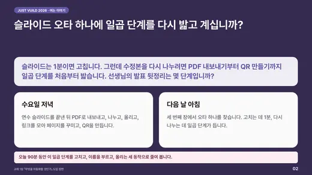
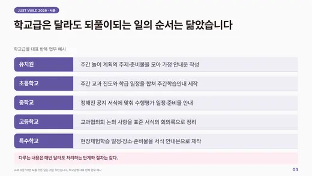
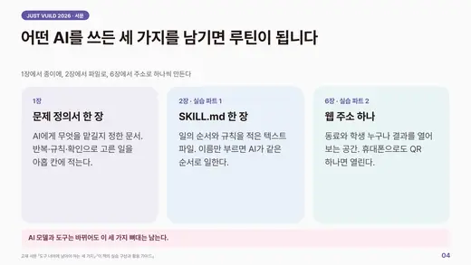
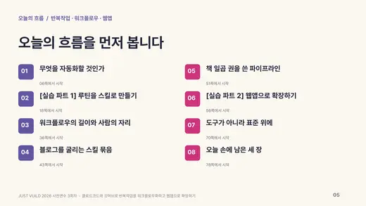
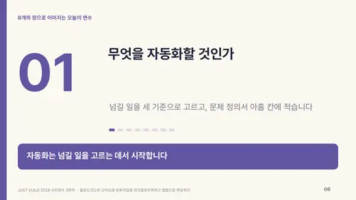
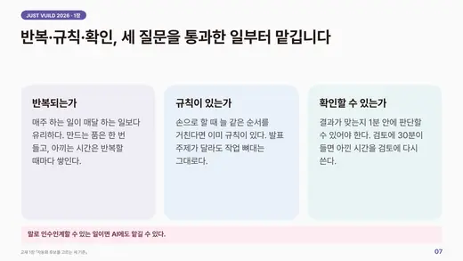
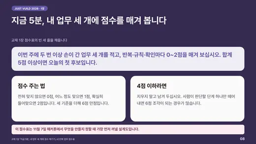
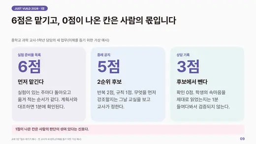
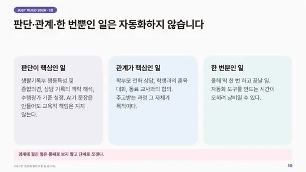
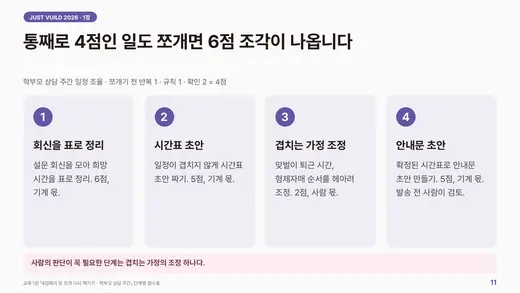
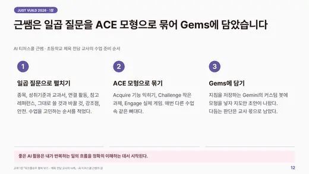
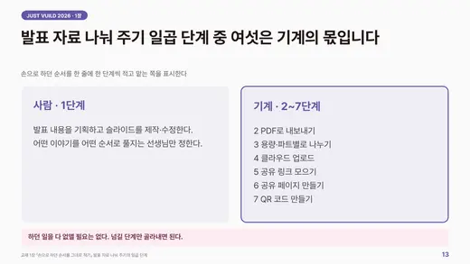
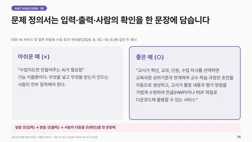
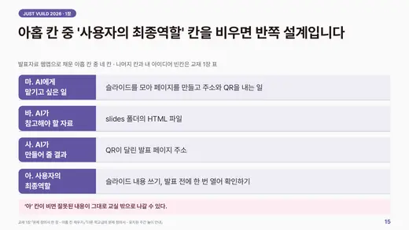
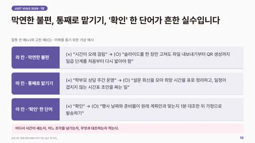
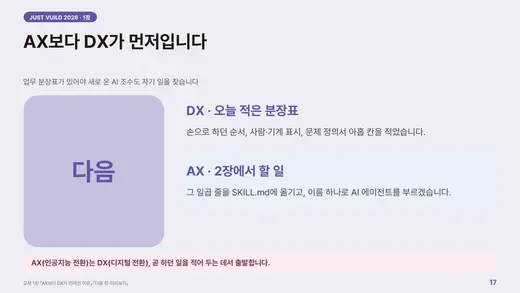
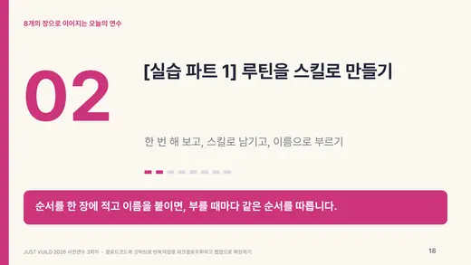
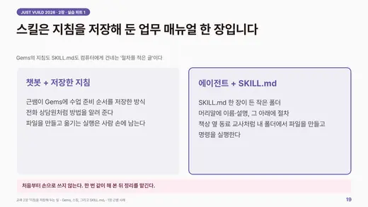
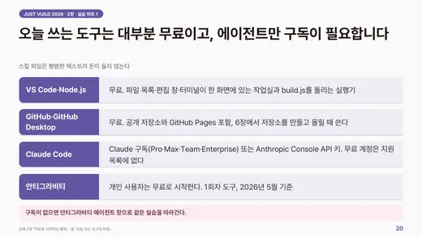
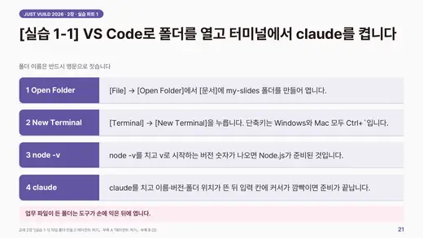
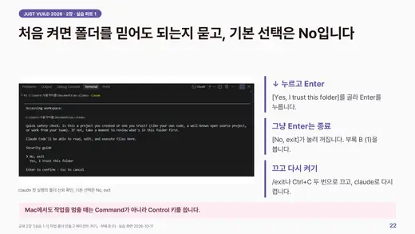
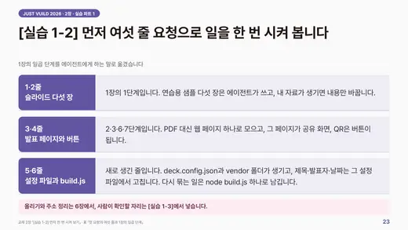
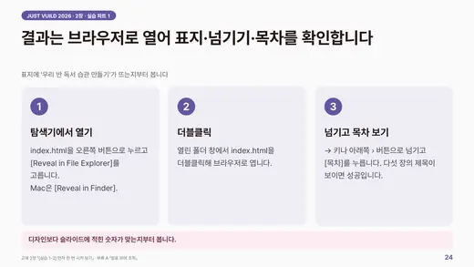
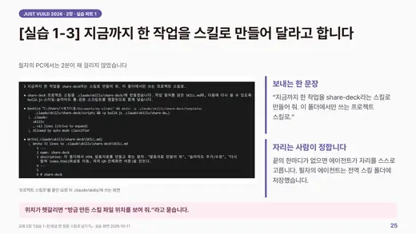
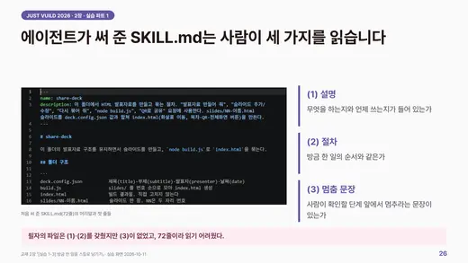
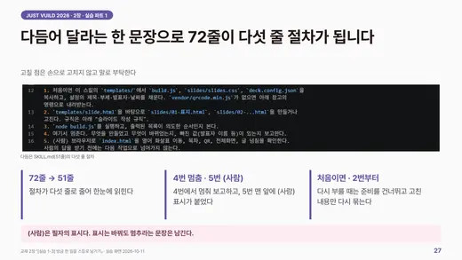
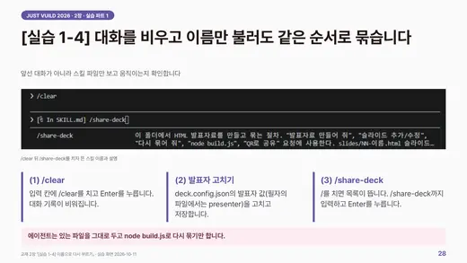
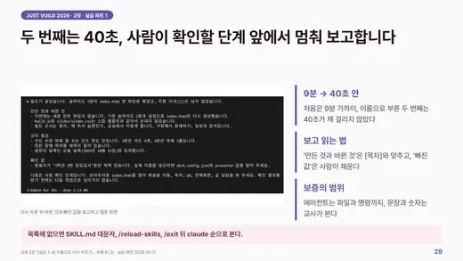
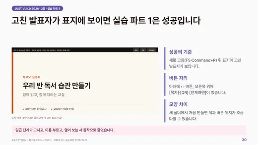
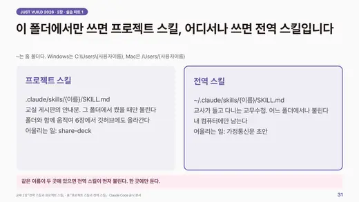
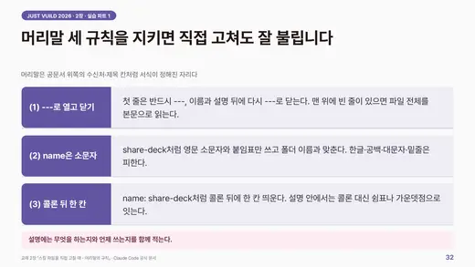
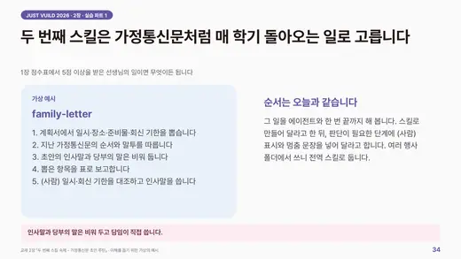
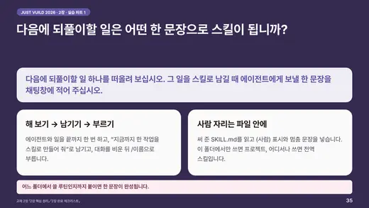
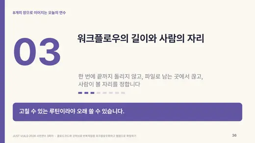
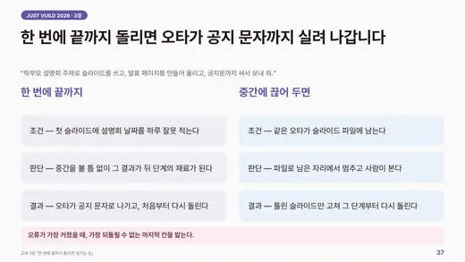
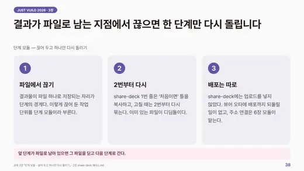
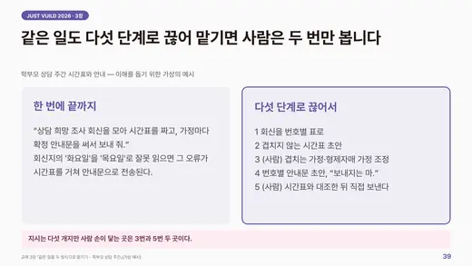
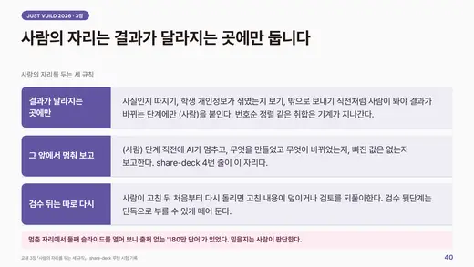
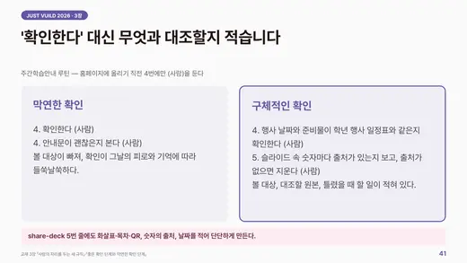
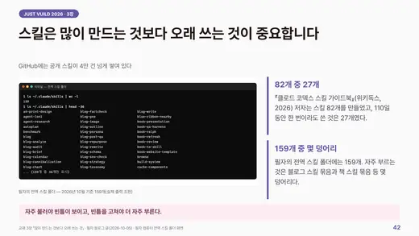
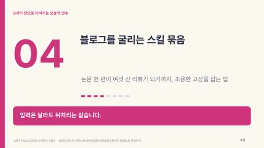
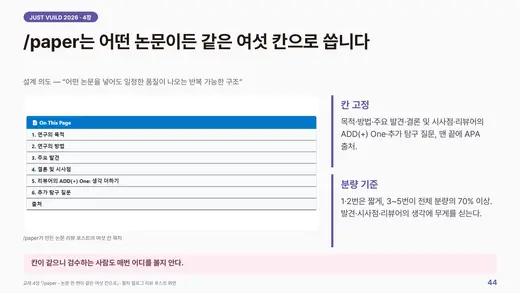
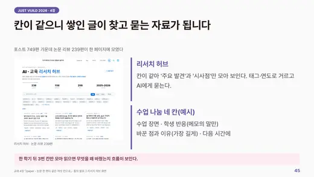
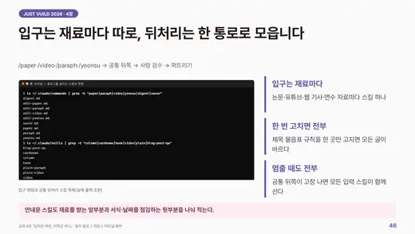
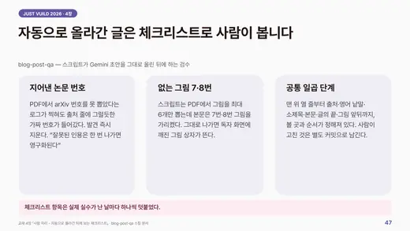
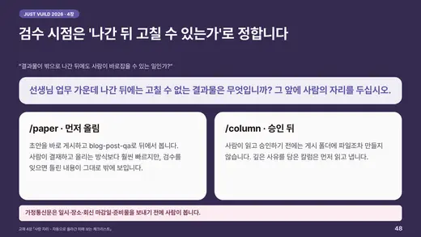
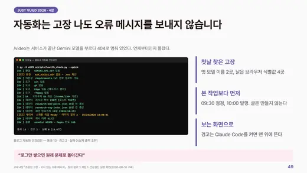
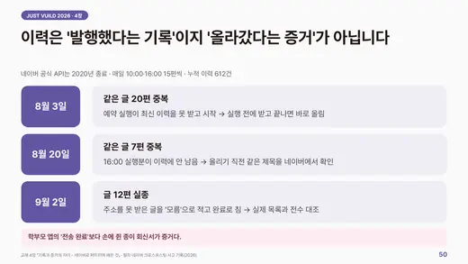
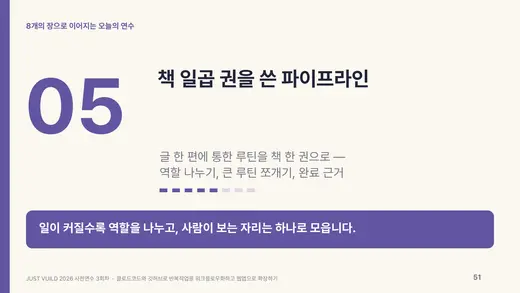
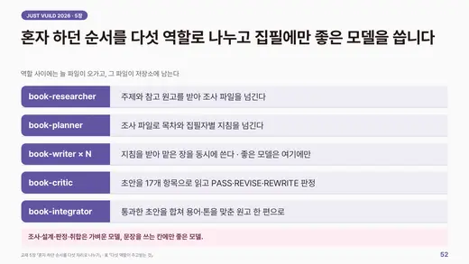